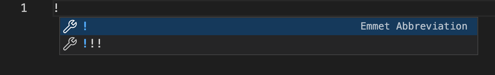

HTML 入门笔记1
1. HTML 是谁发明的
HTML是由Web的发明者TimBerners-Lee和同事DanielW.Connolly于1990年创立的一种标记式语言，它是通用标记语言SGML的简化。用它的语法规则建立的文档可以运行在不同操作系统平台上。因此，html文档属于纯文本文件（它能用任意的文本编写器书写）。
2. HTML 起手式
HTML 起手式为 感叹号 + TAB

运行结果为生成html默认模版
3.常用章节标签
- h1-h6: header 即标题的大小
- section: 用来定义文章内容，确认文章章节，通常每个section都有至少一个header 即 h1-h6
- article:
表示页面中的一块与上下文不相关的独立内容，比如网页中的一篇文章或报纸中的一篇文章。 - main: main 标签用于指定文档的主体内容。main标签中的内容在文档中是唯一的。它不应包含在文档中重复出现的内容，比如侧栏、导航栏、版权信息、站点标志或搜索表单。
- aside: 可以用来设置 边栏
4. 全局属性
--是所有HTML元素共有的属性，即使有些全局属性对某些元素不起作用。
- contenteditable(true/false): 表示是否能被编辑
- id：定义唯一标识符，该标识符在整个文档中必须是唯一的。目的主要是为了在链接、脚本或样式时标识元素。
- class: class属性定义了元素的类名。
- tabindex: 设置按tab 移动的时候元素的位置
- title: title 全局属性包含表示与其所属元素相关的建议信息的文本
5.常见内容标签
- a: anchor, 多用于超链接
- strong/em: strong:内容本身强调，em：语气强调
- code：镶嵌代码的片段
- pre: pre 元素可定义预格式化的文本。被包围在 pre 元素中的文本通常会保留空格和换行符。而文本也会呈现为等宽字体。